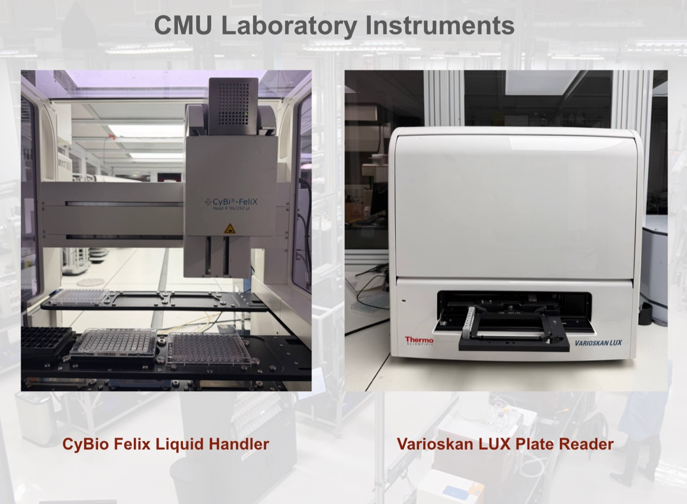
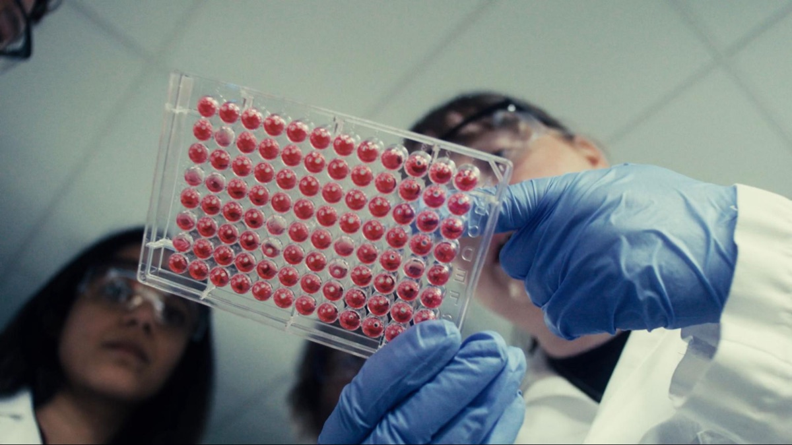

Executive Summary
The Reuters exclusive of September 18 comes down to a single line. Anthropic is running a laboratory in the San Francisco Bay Area where physical biology experiments actually happen. Eric Kauderer-Abrams, the company's head of life sciences, confirmed it in an interview, and outlets including TechCrunch picked the story up the same day. This article looks at how a company that sells software ended up with a room that holds flasks and robotic arms.
Very little about that room has been made public. Anthropic did not say how large it is, how many people work in it, what biosafety level it holds, or when it opened. Kauderer-Abrams was clear about two things. He believes the final test in biology still lies, and will for a while, in real lab work; and using AI to automate the execution of that lab work is at a very early stage. One half of his answer is conviction and the other half is restraint.
Sections 1 through 4 follow what the Reuters report and Anthropic's own published documents say. Section 5 asks whether a company has to own the equipment that makes its data when that data does not exist anywhere in the world. That question belongs to this article, and Anthropic has never described its own choice that way.
Key Figures
Sources: Reuters, September 18 and Anthropic's Model Hardware Standard research preview.
Not disclosed
Lab size, headcount, biosafety level
Reuters asked and the company did not answer. It also did not say when the lab opened
~$400 million
Price of April's biotech acquisition
The reported all-stock figure for Coefficient Bio. Anthropic has not confirmed the price
Weeks → 8 hours
Carnegie Mellon, from bare instruments to a finished curve
Includes the time spent writing the drivers that let the instruments take instructions
58% → 99.3%
QuEra's laser relock success rate
695 recoveries in 700 trials. The finished control script runs with no language model in the loop
What Reuters Confirmed on September 18
Jeffrey Dastin and Michael Erman wrote the story. Two people familiar with the matter told them the lab existed, the company was then asked to confirm it, and an interview with the head of life sciences followed. Anthropic did not break this news itself, and it has never introduced the lab in a press release or a blog post.
Kauderer-Abrams answered briefly and plainly. "We believe that to do biology, the final test is still and will be for a while in real lab work," he told Reuters. The company is absolutely doing that today, he added, and he would describe its approach as typical of what you would see in most biotech companies: some of the work in Anthropic's own facilities, some of it with external partners.
His explanation for why the company does this in-house sits above the lab itself. "The mission of the company is to develop powerful AI in such a way that benefits the world," he said. "By far, we see the biggest opportunity for that in the life sciences, and that is motivating everything that we're doing." There are some things, he told Reuters, that Anthropic can do much faster in its own hands, with the goal of operating at the largest possible scale.
On the question of machines running the experiments, the language turned careful. "We're in the very early innings of using AI to automate the execution of lab work," he said, "an area that has the potential to bring about meaningful acceleration in so many different processes." Both halves live inside one answer: the opportunity is large and the progress is early.
The robot story has a different provenance. The line about Anthropic wanting to push how Claude can direct robotic units with limited human intervention came from two people who spoke on condition of anonymity, not from the company. A spokesperson said that human oversight and involvement are essential for safety. Wherever robotic automation comes up below, that gap in sourcing is worth carrying along.
A Five-Month Run-Up in Plain Sight
The lab did not appear overnight. In April, Anthropic bought Coefficient Bio, a stealth biotech startup eight months old with fewer than ten employees, founded by two alumni of Genentech's computational drug design group. Media reports put the price at about $400 million in stock; Anthropic confirmed the acquisition but had no comment on the deal price. The whole team moved into the company's healthcare and life sciences organization.
In the months that followed, moves in the same direction stacked up. Anthropic released Claude Science, software built for researchers; it added Novartis CEO Vas Narasimhan to its board; and in August it previewed a specification that lets AI operate lab instruments directly. Life sciences already represents one of the company's biggest investment areas by headcount and resources, Kauderer-Abrams told Reuters. In the third week of September, news arrived three days running.
While the company said nothing about the lab, its job listings were talking. In a LinkedIn post that Reuters found, Anthropic looked for a leader who could ramp up procurement and other operations; another listing sought an expert on "protein and nucleic acid characterization"; a third read, "Our goal is to speed up progress in the life sciences by an order of magnitude." A procurement lead and a protein characterization expert are not the people a software business hires.
On the 16th came the announcement of a drug development collaboration with Novo Nordisk. On the 17th, the Life Sciences Verification Program opened in beta. It reviews an applicant's research credentials, security standards and ethical research oversight, and gives verified organizations relief from the safeguards that have been blocking biology-related requests. Two grades exist: Standard Use, which extends to whole teams and is renewed once a year, and High-risk Use, which is tied to a single project and renewed every six months. One relaxes the safeguards; the other removes them. Standard Use gives a team classifiers refined to be more permissive for science tasks; High-risk Use removes all safeguards that block life sciences requests. Under either grade, the announcement says, cyber classifiers stay in place. Making high-risk grants more broadly available is work Anthropic says it is doing with the US government.
The same announcement laid out a rule for data, and that part matters again later. For this program's traffic only, Anthropic moved from rejecting risky requests at the moment of each request to reviewing patterns of behavior afterwards, and in exchange it now retains data associated with flagged activity for 30 days. That data is strictly compartmentalized: it cannot be used for model training, and members of Anthropic's own life sciences research teams cannot reach it. The company has put up a wall between the data it keeps in order to watch and the data it uses to make models better.
Set the three days side by side and a direction shows through. Push the model deeper into biology, vet the people who get to use it that way, and keep the bench where the results get checked inside your own building. Three separate announcements point at one thing.
This Lab Is Not for Finding New Drugs
This is the line the company drew with the most care. An Anthropic spokesperson clarified to Reuters that the lab is not for drug discovery specifically, declining to elaborate. Kauderer-Abrams put it more concretely. "We're not competing with pharma and biotech companies that make their business in bringing drugs to market," he said, and he marked out a second boundary as well: Anthropic is not running clinical trials for now.
Where that line actually falls has to be read precisely. The Reuters headline itself says Anthropic set up the lab as it ramps its AI drug program. At a San Francisco event in June, the company staked out its intention to start running drug programs, saying it would do preclinical work in areas traditional companies did not find attractive financially. Anthropic also confirmed that the Coefficient Bio purchase will help it build tools for drug development. So the spokesperson's sentence is not a declaration that Anthropic will not make drugs. It means that this room is not where drug candidates get hunted, and the boundary its head of life sciences added sits at clinical trials. Staying out of the last stretch that carries a drug to market is a different thing from stepping out of biology.
Look at the commercial stakes and the reason for the line becomes visible. The Novo Nordisk collaboration signed two days earlier is drug development, and Genentech took part in the early trials of the hardware specification. Pharmaceutical companies are Anthropic's customers and its partners. The moment the same company sets out to make drugs itself, those firms are dealing with a competitor instead of a partner. Fundamental biology rather than drug discovery is also a sentence that protects that relationship.
Reuters pointed at one more layer. Customers may worry that Anthropic will learn from their competing drug programs. The company says it walls their data off from view, but the worry is less about data leaking than about the model getting better on that data. A firm that sells software and then starts its own research in the same field cannot dodge the question.
Commercial reasons alone do not account for the whole choice. From here on, this is this article's reading. Putting a lab inside your own building overlaps with a path that keeps the promise never to look at anyone else's data while still getting the data you need. Drug discovery already has data piled up: decades of clinical records, regulatory filings, even lists of candidate molecules that failed, all written down somewhere. Fundamental biology is in a different position. Records of what causes what inside a cell, verified by a person who controlled the conditions, mostly end inside a lab notebook, minus the few lines of results that make it into a paper.
Text scraped off the web is a statement that somebody observed something. A value that comes out of a lab is a record of a result checked by the person who changed the conditions. The first speaks of correlation and the second of causation. The data a company pushing its models hardest will miss most is the second kind, and that kind is hard to buy. If you cannot buy it, you have to make it.
Mistaking Foam for a Software Bug
Three weeks before the lab story, Anthropic opened a specification called the Model Hardware Standard as a research preview. The name is stiff; the job it does is simple. A standard driver reduces each instrument's own idiosyncratic controls to a handful of basic commands such as read and write, and records alongside them the instrument's weight, its safety limits and the values that can be adjusted. Until now those things lived in a paper manual or in the head of somebody who had worked the bench for years. Liquid handlers, robotic arms, plate readers, microscopes, centrifuges and lasers ride on top of the specification.
The specification was not designed inside Anthropic. The acknowledgments at the bottom of the announcement record where it began. Arco Bast, a postdoctoral scientist at HHMI Janelia Research Campus, was running brain-imaging experiments on a rig of lasers, motorized focusers and cameras from different vendors with no common interface, and he built a shared memory dictionary that let the instruments talk to one another at memory speed. Alek Kemeny of Anthropic worked with him to integrate AI models into that interface, and the specification grew out of it. Another researcher on the same campus said starting an experiment used to mean launching seven programs in a fixed order and now takes one click on a dashboard.
Results from the early partners show what the specification is worth. At Carnegie Mellon, instruments with fundamentally incompatible interfaces were tied together across three computers to run a dose-response experiment. Writing the drivers from scratch through to a finished dilution curve took about eight hours, where a vendor-built setup typically takes multiple weeks. At QuEra Computing, an agent wrote control code to relock a quantum computer's laser, and where the existing method worked about 58% of the time, the finished script recovered the correct lock in 695 of 700 trials. That 58% script had taken a team of four engineers several months to build, and it needed around 150 seconds per attempt. A PhD student at the University of Washington connected six instruments in under a week.

The passage worth stopping on is not a success but a failure scene at Genentech. In an experiment tuning the speed at which Claude moved liquids, researchers had to guide the model to recognize that a foaming problem was a physical phenomenon rather than a software error. Anthropic wrote the reason into the announcement itself. As a large language model, Claude learns about the physical world through text and images, meaning its spatial and physical reasoning have limitations that still require expert oversight.
Anthropic's account of that scene is more specific. When bubbles during mixing threw a runtime error, Claude's default instinct was to retry the operation in the same plate well with different parameters, which agitated the fluid further and produced more bubbles. Only after a person explained that the error code came from physical bubbles, and that the run had to move to a clean well and mix more gently, did the model hold on to that fact for the rest of the session. Genentech codified the lesson into reusable liquid handling skills, and afterwards Claude selected sensible default parameters on its own for liquids with different physical properties. A person explained it once, and the explanation stayed on as a rule.

The sentence Genentech left at the close of this experiment points straight at what the failure was worth. By assessing Claude's decisions against their own domain expertise, they are generating the datasets they need to continuously improve models' performance in automating lab experiments. The model's ignorance of physics does not end as a limitation here. Wherever that ignorance shows itself, a person supplies the answer, and that spot becomes the record the next model learns from. The lab is a testing ground and, at the same time, the place where the answer sheets to that test pile up.
Outside biology, the same shortfall showed up too. QuEra reported that when something went wrong with the physical hardware mid-experiment, Claude did not know how to troubleshoot, because its understanding of the rig was programmatic rather than physical. The agent also stopped to wait for human confirmation before any action it judged even slightly risky, so experiments sometimes paused overnight while it waited. Protein solutions and quantum optics are far apart, and the gap sits in the same place in both.
A model that learned the world from text and images has read about foam many times and never made any. The lab is where that difference surfaces, and where the record that closes it gets written. The line about the final test in biology being real lab work therefore reads not only as modesty but as a sentence about equipment. The specification is still a preview, and it attaches only to instruments that have a programming interface; the company says it does not yet work as a universal adapter for older hardware. Reaching past centrifuges to automated incubators and analytical instruments is on Genentech's list of what comes next.
Why Pebblous Is Watching This Move
Owning the equipment that makes your own data is not new in itself. We wrote earlier about a robotic lab that grows twenty kinds of human tissue, doses them and watches what happens, and about an autonomous lab that designs and runs its own experiments. The difference this time is that the owner is not a biotech but a company that builds models. A firm that used to sit on the buying side of data has moved one seat over, to the side that makes it.
For anyone who works on data quality, the value of this news lies in the sequence rather than in the lab's performance. The usual order is to collect data, buy it when there is not enough, and synthesize it when there is still not enough. Anthropic went one step past the end of that line and now holds the instruments, the people and the space that make its data as company assets. That the best-capitalized AI company walked that far is not a strange conclusion to anyone who has worked in a domain short of data.
This is also why AI-Ready Data does not mean training data alone when we say it. In a domain without data, the real asset is not the data but the procedure that keeps producing it. What was measured under which conditions, who verified the value and when, whether setting the same conditions up again returns the same value: those have to survive alongside the number, or the data gets used once and thrown away. A lab, a production line, an inspection process — the structure is the same.
A measurement of what that procedure changes sits inside the same announcement. Tetsuwan Scientific, which builds automated labs, ran 9,143 individual dispenses across 300 unique transfer types, and measured 1,508 conditions over four types of liquid. On held-out experiments, the prediction model refined with those values came out roughly 12% more accurate than the instrument manufacturer's technical specification, beating it on 31 of 45 runs. The specification came from the maker; the 1,508 conditions are a record the team made on its own instruments. Nobody had to argue about which one was right. The side that measured won.
So the question left over is not an invitation to go buy equipment. Asking the following four in your own domain will roughly show you which seat you occupy right now. This is not a list Anthropic proposed; it is this article's transfer of the case onto our own work.
- How much of the data you use today came from conditions you controlled yourself? The rest is a record of what somebody else wrote down as an observation.
- When that data has to be made again, whom do you have to ask? If you have to buy it, what is the price and the waiting time?
- Do the measurement conditions and the verification history survive alongside the value? If only the value survives, the next person has to decide all over again whether to trust it.
- Have you ever costed out the difference between owning the equipment and renting it? Anthropic answered by buying an entire biotech.
The fourth has no correct answer. Few companies can produce a $400 million one, and for most organizations sharing the load with an external partner is the right call. But if that calculation has never been run, the complaint about not having enough data comes back in the same place every year.
Thank you for reading this far. The remarks and figures cited here can be checked by anyone in the Reuters report and in Anthropic's announcements of the Model Hardware Standard and the Life Sciences Verification Program. In your own domain, we are curious which side you think is right: owning the equipment that makes your data, or renting it. If you have run the numbers, we would be glad to hear what they were.
References
News reporting
- 1.Dastin, J., & Erman, M. (2026-09-18). Exclusive-Anthropic quietly sets up biology lab as it ramps AI drug program. Reuters. finance.yahoo.com
- 2.Bort, J. (2026-09-18). Anthropic is operating a lab that conducts biology experiments. TechCrunch. techcrunch.com
- 3.Madori Davis, D. (2026-04-03). Anthropic buys biotech startup Coefficient Bio in $400M deal: Reports. TechCrunch. techcrunch.com
- 4.Bellan, R. (2026-09-09). 'Gambling with our lives': Anthropic researcher quits, warns against self-improving AI. TechCrunch. techcrunch.com
Official announcements
- 5.Anthropic. (2026-08-27). Previewing the Model Hardware Standard. anthropic.com
- 6.Anthropic. (2026-09-17). Introducing the Life Sciences Verification Program. anthropic.com
- 7.Novo Nordisk. (2026-09-16). Novo and Anthropic will collaborate to advance drug discovery with Claude. novonordisk.com